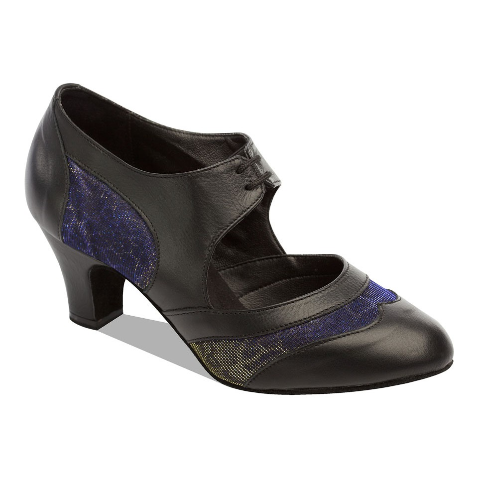
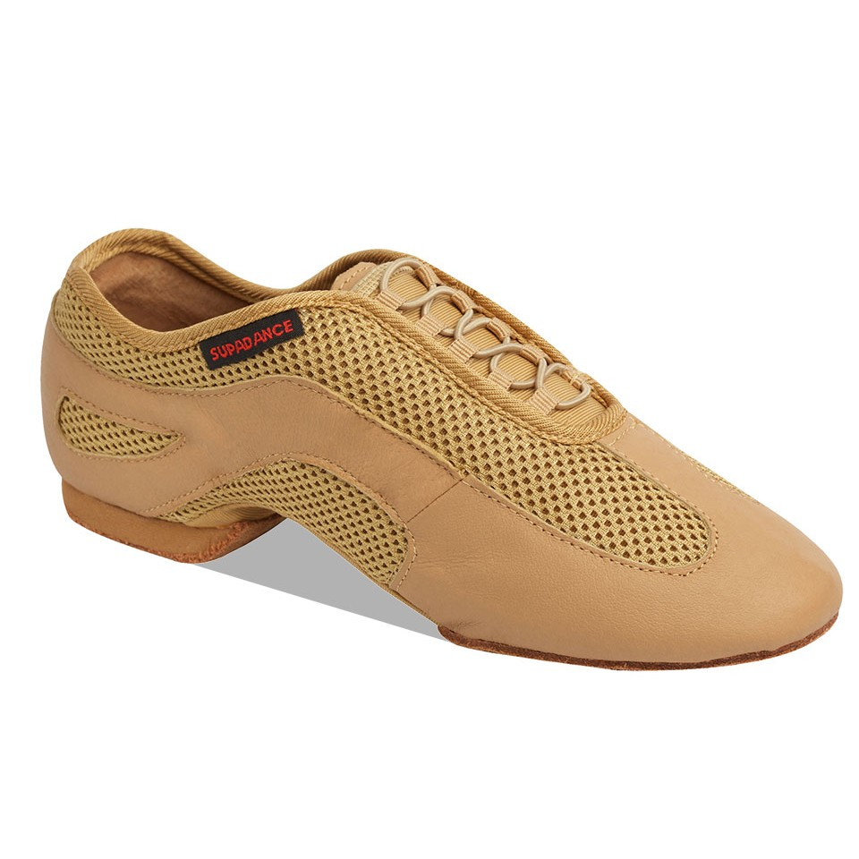
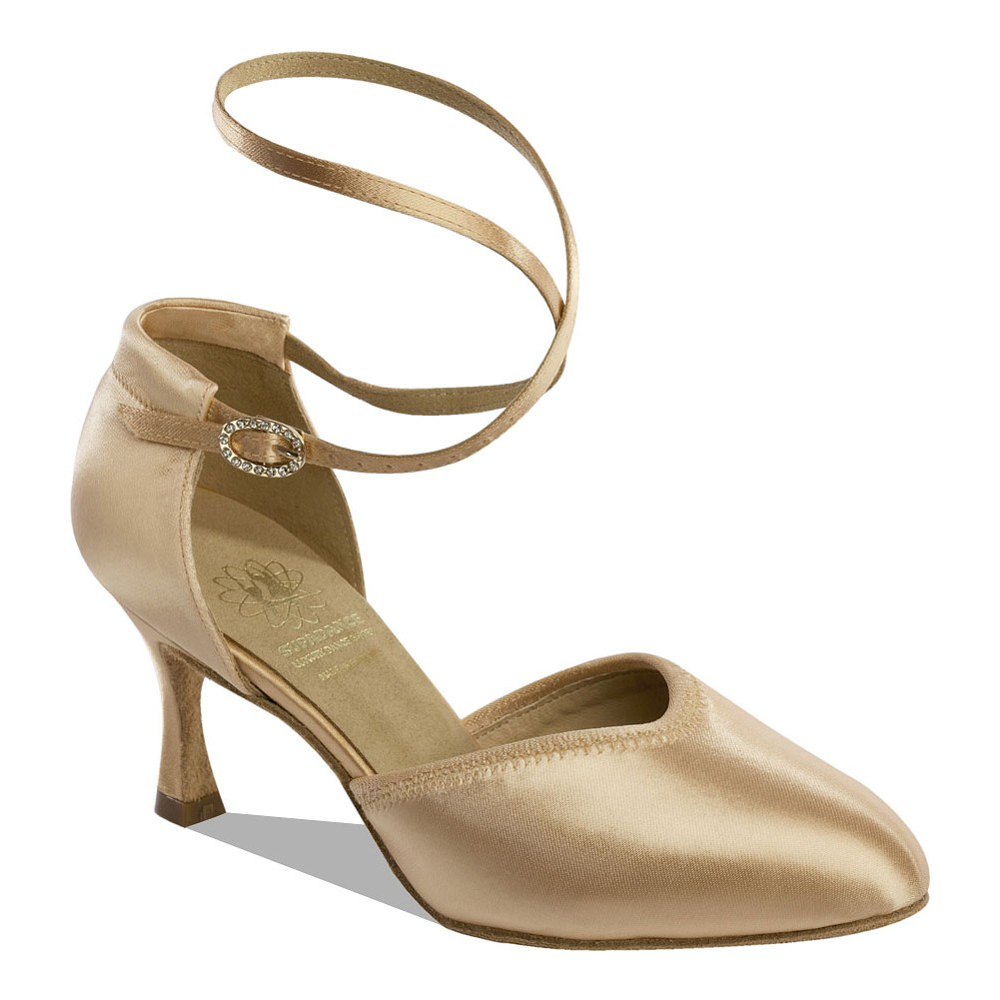
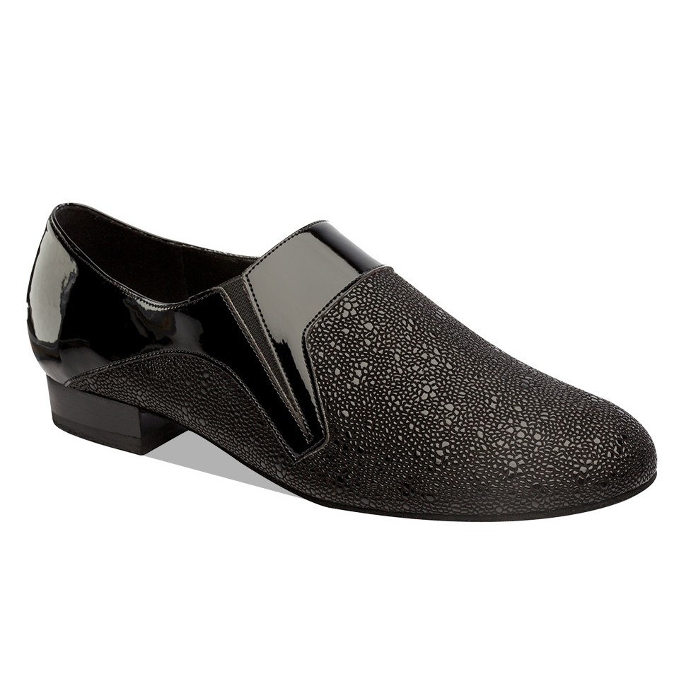

Clothes
There is no specific dress code for our classes.
You can wear anything you feel comfortable and can move in.
Jeans
are perfectly fine for these styles. Dresses,
blouses or shirts work well for these styles but are not necessary.
A heel is preferable for women although height is up to you! A flare style heel is best. You can
purchase ballroom shoes which have suede on the sole to help with balance and turns.
For men, a flat shoe with smooth sole is easiest to move in. These can be casual shoes although dress
shoes
which lace up are best for these styles of dance.
Best to avoid any shoes with rubber soles, such as
trainers.
Men's Latin dance shoes are typically lightweight, flexible oxfords with a 1.5 inch “Cuban” heel and
suede soles. Styles include white, black, two-tone spectator shoes and other color combinations.
The shoes can be made of leather, nubuck or patent leather.
The fit should be snug, but not too tight.
Most men only purchase Latin shoes for competition purposes; dance lessons or any occasions in life, and
you'll seldom see men wearing Cuban heels when out for social dancing.
For Latin ballroom dancing, women wear either pumps or sandals with a 2- or 3-inch heel. You may want to
choose a lower height if you are not used to dancing in heels.
Pumps are open along the sides of the feet, have a closed toe box and are secured with an ankle strap.
Sandals are strappy and open-toed.
Most often made of leather, women's Latin dance shoes are lightweight, flexible and have suede soles,
which provide the right blend of grip and slide while moving across the floor on the dance lessons,
dance competitions or practicing.
It's best to purchase your first pair of Latin dance shoes in person, not online or from a catalog. When
you shop, try several styles and brands. Look for a fit that is snug and hugs your foot, but is not too
tight. Shoes that are too tight can cause blisters; those that are too loose can make you trip.
For Latin sandals, the woman's toe should be as close as possible to the front of the shoe. Some women
prefer to have their toes extend or hang over the edge of the shoe so that they can point their toes
more easily and feel the floor.
-

Female practice shoes
-

Male practice shoes
-

Female event shoes
-

Male event shoes